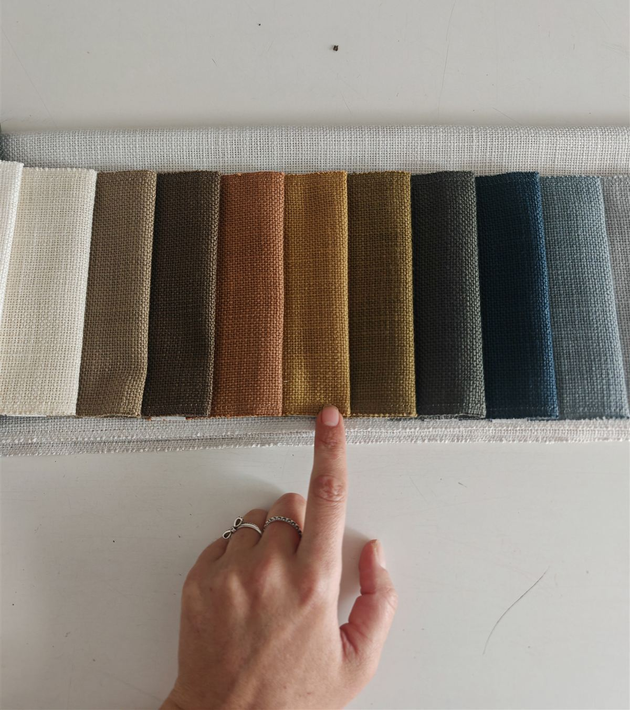
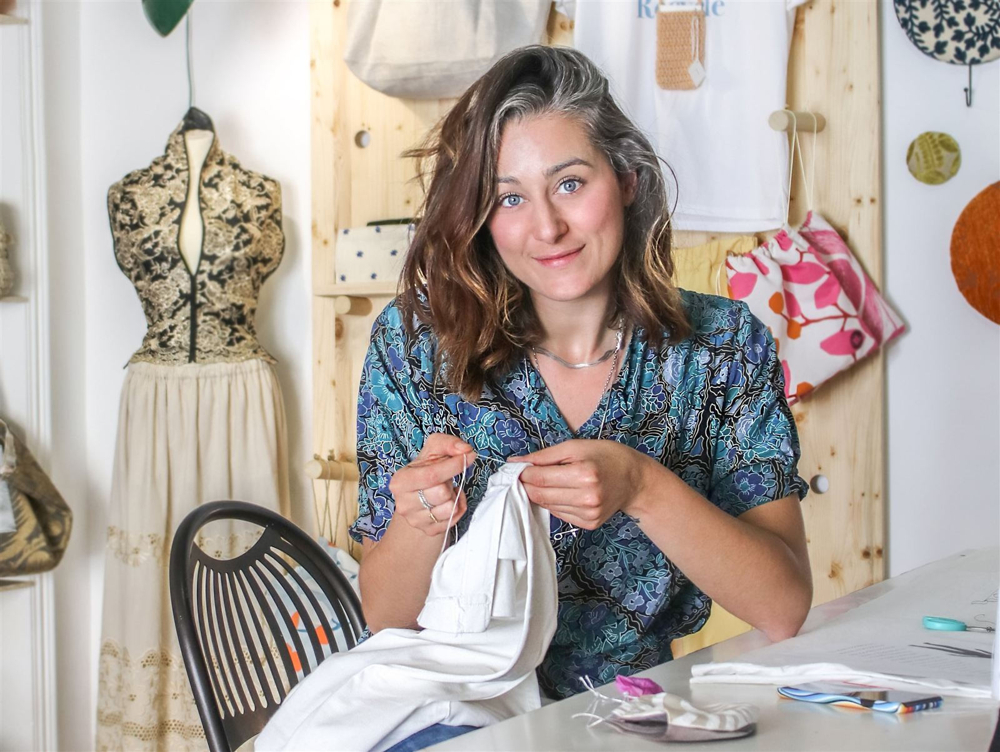

Campionari di tessuti dismessi: non buttateli, li riciclo io
A fine collezione le cartelle colore e i campionari di tappezzeria diventano un problema: occupano spazio e finiscono nei rifiuti. Da anni li recupero dalle aziende e li riciclo in borse, accessori e oggetti per la casa. Ora vi offro un servizio completo: recupero documentato, oggetti fatti con i vostri tessuti, laboratori per i vostri dipendenti.
- Per chiaziende e rappresentanze di tessuti, tappezzeria, arredamento
- Cosarecupero con scheda, regali e oggetti per le fiere, laboratori
- ChiGreta Naselli, Repunto, Sicilia

Che fine fanno i campionari a fine collezione?
Un tessuto da tappezzeria nuovo costa tra i 30 e i 180 euro al metro. Nei campionari ce ne sono decine di metri, tagliati in pezzi piccoli, perfetti e mai usati. Quando la collezione cambia, quasi sempre vengono buttati e diventano scarti tessili.
Io li vedo per quello che sono: tessuti di qualità alta. Arrivano in scatoloni, li divido per tipo, e ognuno trova il suo uso: i più pesanti diventano borse e accessori, i più leggeri vengono tagliati a strisce e lavorati all'uncinetto per fare ceste. Anche le cartelle di carta da parati servono: ci incarto le spedizioni.

Tre formule, dalla più semplice alla più completa
1. Recupero con scheda
Prendo i vostri campionari dismessi e vi mando una scheda di recupero: quanti chili e quali tessuti, cosa sono diventati, con le foto dei pezzi finiti. Potete usarla nel bilancio di sostenibilità e per raccontare cosa fate dei vostri scarti.
È gratuita: a voi resta solo la spedizione dei campionari fino al mio laboratorio.
2. Oggetti con i vostri tessuti
Regali aziendali originali per clienti e dipendenti, gadget per le fiere: bustine, sacchetti, shopper, porta campioni cuciti con i vostri campionari. Ogni pezzo è diverso, in piccole tirature.
Regali e oggetti per le fiere →3. Laboratorio in azienda
Mezza giornata con il vostro gruppo: si taglia e si cuce a mano un oggetto con i vostri tessuti. Un'attività di squadra che fa vedere, con le mani, il valore di quello che producete.
Il laboratorio per i dipendenti →Dalla prima mail alla scheda di recupero
- Mi scrivete cosa avete: che tessuti, più o meno quanti scatoloni, quando si liberano.
- Vi rispondo con la formula giusta e, se serve, un preventivo.
- Mi spedite i campionari, con la spedizione a vostro carico. Al mio laboratorio in Sicilia li peso, li divido per tipo e li fotografo.
- Vi mando la scheda di recupero e, se li avete chiesti, gli oggetti fatti con i vostri tessuti.


Sono Greta Naselli
Sono artista del tessile, consulente di moda sostenibile e insegnante di sartoria zero waste. Ho studiato Tecniche e culture della moda all'Università di Bologna e modellistica alla Secoli Next Fashion School.
Ho fondato Repunto, sartoria rigenerativa che lavora soprattutto con i campionari di tappezzeria dismessi. Oggi il laboratorio è in campagna, vicino a Regalbuto, ai piedi dell'Etna. Le aziende che mi conoscono mi scrivono quando devono liberarsi dei campionari: questa pagina nasce da lì.
Leggi il manifesto di Repunto →Prima di scrivermi
Che tipo di campionari recuperate?
Cartelle colore e campionari di tessuti per tappezzeria e arredamento, anche tende e tessuti per abbigliamento. Mi servono pezzi di tessuto, non importa se piccoli. Le cartelle di carta da parati le uso per gli imballaggi.
Cosa c'è nella scheda di recupero?
Il peso dei campionari ricevuti, il tipo di tessuti, cosa sono diventati e le foto dei pezzi finiti. È un documento semplice, pensato per essere citato nel vostro bilancio di sostenibilità o sui vostri canali.
Il nome della vostra azienda compare sui prodotti?
Solo se lo volete. Negli oggetti fatti per voi possiamo mettere un'etichetta con il vostro nome. Nei pezzi che vendo io, invece, il nome dei fornitori non compare.
Lavorate solo in Sicilia?
No. Il laboratorio è in Sicilia, ma i campionari possono arrivare da tutta Italia. Per i laboratori in azienda vengo da voi in tutta Italia: fuori dalla Sicilia viaggio e alloggio sono a vostro carico.
Quanto costa?
Il recupero con la scheda è gratuito: pagate solo la spedizione dei campionari fino al mio laboratorio. Per gli oggetti fatti con i vostri tessuti e per i laboratori vi mando un preventivo su misura.